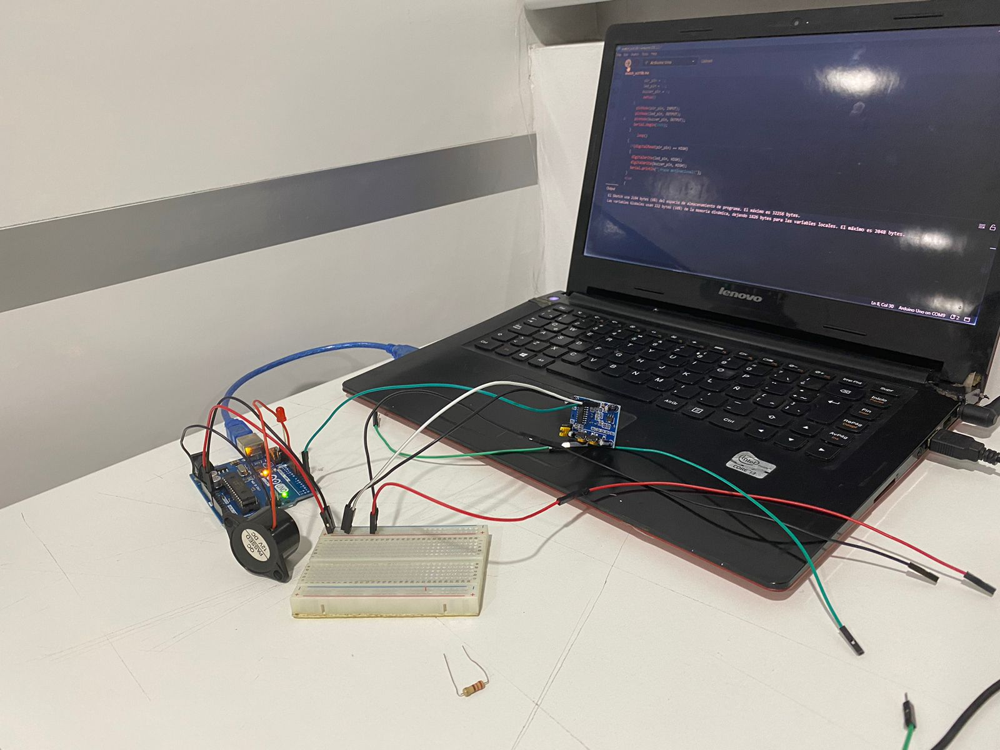

Semana 8
Clase presencial: se llevó a cabo una dinámica donde los grupos probaron y ajustaron sus proyectos. Se seleccionaron representantes para intercambiar ideas entre grupos y ayudar con diferentes tareas. Se resolvieron problemas, como ajustar la dimensión del sensor PIR y corregir la activación del LED y el Buzzer. Se experimentó con diferentes ajustes, y al final, la solución fue envolver el sensor PIR para mejorar la detección de movimiento.
Clase virtual: se introdujeron dos lecturas sobre los fundamentos de CAD, CAE y CAM, así como sobre la fabricación digital. Durante la clase, el profesor realizó rondas de preguntas cada 20 minutos, con diferentes participantes en cada ronda. La sesión concluyó con el profesor respondiendo a todas las preguntas planteadas.